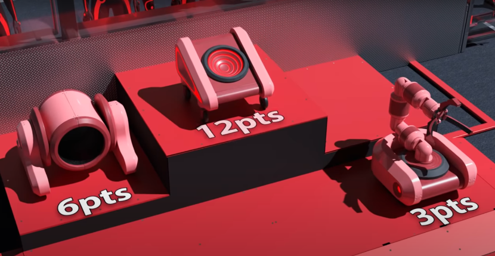
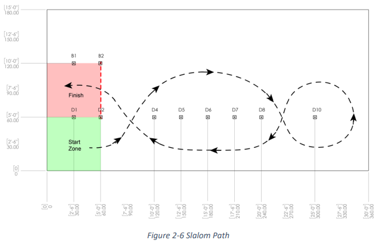

In the fall of 2017, I joined my high school robotics team, the Lindblom Electric Eagles.
They compete in the FIRST Robotics Competition, or FRC for short. FRC is a high school robotics competition with regional competitions all over the world.
If you win a regional you get to compete in the World’s Championship where all regional winners compete.As for the matches themselves, there are 2 alliances made up of 3 robots.
Each alliance has to work together to complete specific tasks and gather more points than the opposing alliance.
My robotics team was split into 3 main teams, mechanical, electrical and programming.
The mechanical team is in charge of the design and manufacturing of the components for our robot.
The electrical team has to wire all the components together. The programming team develops all the software for the robot.
I was a part of the programming team.
Since you can only spend 4 years on the team there is a progression system my team had.
The first year on the team you learn how to program in Processing by completing problem sets.
You don’t get to program the robot your first year, instead your task is to create a game by the end of the season to show off at the competition and engage people to our team.
Second year you get to start programming the robot and get to implement simpler functions to the robot and also help the rookies when needed.
Third and fourth year you have larger responsibilities with programming major functions to the robot and help organize the goals for the programming team that season.
At this point you are also expected to be able to answer questions from judges during competitions and may have to give presentations.
Self-Leveling Elevator
The 2018/2019 season was the first season I got to program the robot. The game for that year was called Destination: Deep Space.
The objectives of this game was to put hatch panels on a cargo ship and rocket ship to be able to load cargo, then retreat back and climb platforms to get to your habitat.
Below is the trailer for the game for more info.

I was assigned to program the robot’s elevator to climb up these various platforms pictured above.
There were 3 unique height platforms, each worth different points. Their dimensions are shown in the image below. The lower platform worth 3 points we were able to just drive up that platform.
The other two platforms weren’t able to climb up without the elevator.
The mechanical team designed an elevator to be able to climb up these platforms.
It was two “legs” as we called them, they each had a motor so they would be pushed down into the ground lifting up the robot.
Each leg had limit switches and potentiometers. The back leg had wheels at the bottom to be able to drive the robot onto the platforms.
Below is a video showing the first climb test.
As you can see, it is not a very fast climb. The video is sped up and in real time it took about 35-40 seconds to climb.
In the game, you can start climbing in the last 30 seconds of the match.
The problem was the legs were each controlled by a motor. A small difference in the motor’s gears can affect the speed at which the motor goes at.
This can cause one motor to travel faster than the other, raising one leg faster and causing the robot to tip over.
At first we had the motors mapped to different buttons so we can control each one independently which is why the robot is seen leaning back and forth in the video.
It was awkward to control the robot this way, not having precise control of the motors.
The solution was to use a navX, a motion sensor that can detect motion in 9-axes but for our purpose I was just going to use its angle detection.
I set a threshold that allowed the robot to tilt a certain amount before the robot had to correct itself.
For example, if the threshold is ±5 degrees and the sensor reads -8 degrees this means the robot is tilting back and the front leg is moving faster than the back leg.
The robot would slow down the speed of the front leg until the tilt of the robot is back within the threshold.
For precaution, we used the potentiometers which had a string attached to them to measure how extended the legs are.
The further the string was pulled the higher the voltage read on the potentiometer.
Additionally the limit switches were used to turn off the motors when the switches were triggered, even if the driver is pressing the button to drive the motors.
This prevented the motors from breaking anything when the legs were fully retracted or extended.
A further precaution was taken to use the potentiometers to detect when the legs were near full extension to slow down the motors to make sure the legs don’t slam into the limit switches, breaking them.
In competition, the climb system worked well. All the precautions paid off as we ranked 4th highest in habitat climb score in the regional out of 40 teams. We were tied for 2nd most points.
Below is a video of the robot climbing during competitions
Regional Winners!
With the combined effort of the team and all it's departments we won our very first regional ever that year.
In the next season of 2019/20, the game was called Infinite Recharge. In this game you had to pick up yellow balls called powercells and shoot them into ports to score points.
At the end of the game you have to climb onto a swinging hanger with your alliance robots.
Click on the video below to see the game trailer.
In the first 15 seconds, the robot is autonomous. We needed to come up with routines the robot would do depending on the various starting positions of the robot.
This is the setup of the field before the match starts. The routine in purple is for when the robot does not start in front of the 3 powercells.
In this routine the robot is supposed to shoot the 3 preloaded powercells into the port then drive off the line.
This routine can be used when starting anywhere on the line.
This routine can score a max of 23 points if all powercells go into the inner port and a minimum of 5 points if none are scored.
Usually we would score 17 points.
The green routine was for when we started in our ideal position. The robot would shoot 3 powercells at the port.
Then drive forward, collect the other 3 powercells in the trench. This routine allowed us to get a headstart by having 3 additional powercells by the start of teleop.
So to make either routine possible the robot has to be able to aim and shoot at the port and move on its own.
The green routine also requires the robot to be able to pick up the powercells on its own.
Here is a video showcasing the autonomous routines in competition.
The stages for the purple autonomous routine were quite simple.
It only had two stages, it shoots the powercells at the port, once empty it moves onto the second stage where it drives forward until the game timer reaches 8 seconds then stops.
It's simple but it got us points consistently.
The green autonomous routine has more stages but not all were used in this year's competition. It had 7 stages but only got through 4 of them during matches. All stages were as follows:
Stage 1: Check if the turret is calibrated, if not calibrate it
Stage 2: Locate the port and start revving turret to shoot
Stage 3: Once locked on, shoot all the powercells
Stage 4: Drive forward to collect the 3 additional powercells
Stage 5: Once the powercells were collected, drive back to the initation line
Stage 6: Locate the port again to get a lock on
Stage 7: Shoot the remaining powercells
During matches we only got through to the quarterfinals because at this stage our collector required the robot to move slowly and be aligned perpendicular to pick up the powercells efficiently .
After this competition we modified and improved the collector to be able to collect the powercells much quicker.
Sadly, the remaining competitions were canceled due to COVID and never got to test it during a match that season.
We still managed to earn the 3rd highest points during autonomous in the compeition out of 54 teams.
This is going to go more in depth about the vision tracking used for the autonomous routines described above.
Since we wanted to be able to collect the 3 powercells in the trench, we first just tried having the robot go forward and collecting them.
With the first iteration of the collector this was a problem because the powercells would usually get stuck if not collected from the center.
Below you can see an image of the robot and the middle channel where the powercells were most effectively collected.
At the edges of the collector, the powercells would sometimes get stuck between the intake wheels and the plastic, tearing the powercells.
The solution was to put a camera in front and have it align the robot with the powercells to be able to collect them.
For the vision processing we did not use java or the RoboRIO which is where the code ran on the robot.
Instead, we used a raspberry pi and python to run a vision tracking script.
This gave me the opportunity to learn a new language and a new concept of computer vision.
For the python script, I used a library called cv2 that allowed me to camera video. Once I had the video feed, I filtered for the yellow color of the powercells and made a mask from it.
This allowed to only see where the powercells are. I ordered the blobs created from the mask from largest area to smallest. That way it would prioritize the largest blob which would be the nearest powercell.
I would then create a bounding rectangle around the largest blob and find its center. We would only consider blobs with an area larger than 500.
This was a value that helped me get rid of noise and random smaller blobs that were irrelevant to me.
The problem was the location of the powercells was identified in a python script but the control of the robot was in java. I needed a way for them to communicate so the location of the powercell can influence the behavior of the robot.
I used networktables which would allow me to send a value to a table that you can then pull from a server. This was the basic setup for the vision tracking.
This is a video of the first test of the script working with the robot.
Everything for the computer vision tracking was basically done. For actual competition use there were a few things left to do.
I needed to have the script run on its own as soon as the RasPi was turned on.
The camera settings had to be changed to match the ones used when creating the mask for consistent results in case we had to change cameras.
Also, I had to make sure the Raspberry Pi had all the proper software and libraries and their correct versions.
For convenience, I made a shell script for 2 of these cases and modified the autostart script.
This way all I had to do when I got a new raspberry pi, is clone the repository on the pi using git then run the 2 shell scripts and the modified autostart script and it was ready to be used for competition.
We found more uses for the RasPi as well. Since we couldn’t check if the RasPi was on during competition due to not having a monitor.
I had the python script have a “heartbeat” where it would just add to a value and send it to the dashboard of the drivers.
That way if we saw that the heartbeat wasn’t going up then the RasPi wasn’t on and we could troubleshoot before matches.
This computer vision script was useful for this competition and future ones as well. Since the game for next season used the same powercells.
It also gave me valuable exposure and experience to a new application for programming and a new language.
The 2020/21 season was different from previous seasons. Due to the pandemic there was an uncertainty if there were even going to be competitions.
It was announced that there was going to be a competition but not like before where teams gathered at an arena and competed. This year it was going to be at home or rather at school.
There were going to be a series of challenges involving similar tasks as the previous season.
The teams would then be put into a group and would upload videos of their robot completing the challenges and then judges would score them.
There were several challenges but the one I wanted to do was the Auto Nav challenge. The robot has to autonomously navigate through 3 different paths as fast as possible.
There is a layout for the competition area with markers to show the different paths.
The three paths are called barrel racing, slalom, and bounce. Shown in order below.

To be able to navigate through these paths, the robot needs to know what angle it's facing and how far it has traveled. Just by knowing these two measures we can navigate these paths.
I decided to approach this by treating every movement as a state and the robot just has to go through these states to be able to complete the path. It would function like a finite state machine.
You define the different states and the order they go in and then the robot just has to execute them in order.
In the end we came up with five different states, circle, drive distance, drive distance with assist, idle, and turn to. I made an abstract autoState class and each one of these five states would extend from the abstract class and modify its function.
I then made an AutoFSM class that would handle an arraylist of the autoState class.
In this AutoFSM class I could add a new state to the arraylist then iterate through the arraylist until it has gone through all the states.
The circle state would allow the robot to drive in a 360 degree circle. The drive distance state would have the robot drive forward a certain distance based on encoder counts and speed the user defined.
When driving forward we allowed the robot to have an error of 2 degrees since it couldn’t drive perfectly straight. Once it veers off the 2 degree threshold it would correct itself.
The drive distance with assist was for when the robot traveled further distance where the 2 degree threshold would add up to much and take the robot off course.
In this one I used my powercell tracking script to have the robot lock on to a powercell that would then guide the robot.
This worked better for long distance because the powercell would be a static reference for the robot to lock on to.
The idle state would have the robot be idle for a fraction of a second when transitioning between states to prevent the motors from jolting when set to different values.
Finally, the turnTo state functioned very similarly to the self leveling elevator. We set an angle we wanted the robot to turnTo and using the navX it would detect the angle the robot is at and it turns until reaching the angle.
The closer it approaches the angle, the slower the robot turns to prevent it from overturning.
Here are the videos we submitted to the competition.
This is my proudest achievement in robotics. Not only were there a lot of challenges due to COVID and only being allowed in the building for a couple hours on certain days
but this combined all the knowledge and experiences from prior projects, involving java, python, FSMs, computer vision, and sensors.
The result was a flexible state machine that can be used to make any routine. This can even be used for future games, just creating a new state
and it can be fed into the FSM. It is also really rewarding seeing the robot navigate a path completely on its own.
So much joy and excitement when the robot completed the first path proving that it can be done.
A project I'll never forget.